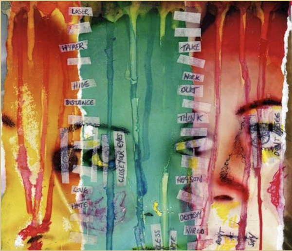
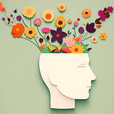

Jainism for Youth: Understanding the Consequences of Neglect
Exploring the Ripple Effects of Disregarding Principles
Exploring the Ripple Effects of Disregarding Principles
Disconnecting from Jainism can lead to a weakened cultural identity and a diminished sense of purpose among youth. Jain practices, traditions, and values are integral to their heritage, and without engagement in these teachings, young people may struggle to understand their roots and feel a lack of belonging. This disconnection can result in feelings of aimlessness and dissatisfaction, leaving them vulnerable to negative influences and undermining their ability to contribute positively to society. As they drift away from these essential principles, they may also miss out on the personal growth and fulfillment that comes from living a life aligned with their cultural values.
Engaging with Jainism provides youth with a foundation for cultural innovation by encouraging them to explore their identity through the lens of traditional values. When young people disconnect from these teachings, they may struggle to integrate their cultural heritage with contemporary ideas and practices, stifling creativity and self-expression. This lack of cultural innovation can result in a homogenized experience, where young individuals feel pressured to conform to mainstream trends rather than expressing their unique cultural perspectives. Consequently, the vibrant tapestry of Jain culture may lose its richness as youth fail to contribute their voices to its evolution.
As youth distance themselves from Jain teachings, they risk losing the ethical framework that guides their actions, including core principles like Ahimsa (non-violence), Aparigraha (non-possessiveness), and Satya (truthfulness). This erosion can lead to harmful behaviors, such as disrespect for life and a materialistic outlook, while also weakening community bonds. Without a strong foundation of shared values and rituals, youth may experience reduced support networks, hindering the community's ability to address social, environmental, and charitable initiatives collectively.
Jainism teaches the principle of interconnectedness among all living beings and the environment. As youth lose touch with these teachings, they may develop a sense of disconnection from the natural world and the impact of their actions on others. This disregard can lead to harmful behaviors, such as environmental neglect and a lack of concern for the welfare of animals and fellow humans. Without an understanding of the interconnected nature of life, young people may fail to recognize their responsibility to contribute positively to the world, resulting in a lack of advocacy for important social and environmental issues.
Losing touch with the spiritual and communal aspects of Jainism can adversely affect youth mental health. Integral practices like meditation and mindfulness promote resilience and emotional stability, and without them, young people may experience increased stress and feelings of isolation. Additionally, Jainism’s commitment to environmental stewardship emphasizes sustainable living. A detachment from these teachings can lead to neglect of ecological responsibilities, contributing to behaviors that harm the planet and undermine global efforts toward sustainability and social justice.
Jainism fosters respect for diversity and encourages open-mindedness towards other cultures and philosophies. When youth disconnect from these teachings, they may become less receptive to learning about and engaging with different perspectives. This reduction in cultural exchange can lead to narrow-mindedness and intolerance, making it difficult for young individuals to collaborate effectively in an increasingly globalized society. A lack of appreciation for diverse viewpoints can also diminish their ability to build bridges with others, ultimately undermining efforts to promote peace, understanding, and cooperation in a multicultural world.